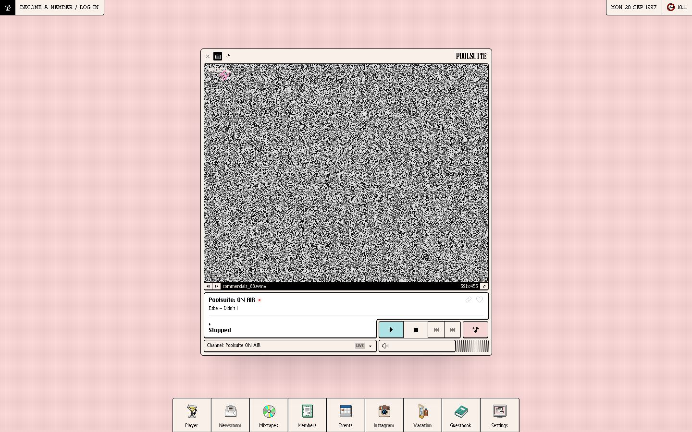

References / Website / 303
Poolsuite
A web radio and lifestyle brand that frames its player as a classic Mac window on a pale pink desktop.
- Source
- poolsuite.net
- Style
- Vaporwave (agent-proposed, not yet reviewed by a person)
- Moods
- Sunny, retro, playful
- Evidence
- Captured with
tools/capture.mjs(headless Chrome, 1440 × 900) on 28 September 2026 and inspected. The screenshot shows the first viewport; the measurement covers up to four screens. - Reviewed
- Rights
- Third-party work, stored with credit for commentary. License: unverified. Rights policy
Observed
- The desktop is flat pale pink with a faint dot texture.
- A cream window with a thin black outline, a close box, and the POOLSUITE wordmark frames a video area showing black-and-white TV static and a file name “commercials_88.wmv”.
- Below the video, a now-playing panel and square transport buttons in pale blue and pink.
- A dock of square buttons with small pixel icons (a cocktail, a CD, a camera, a sunscreen bottle) runs along the bottom; a clock at the top right reads MON 28 SEP 1997.
Why it belongs
The measurement finds hard shadows on 60% of boxes and zero radius, but a median offset of 11 px, because the main window casts a large offset shadow rather than a thin bevel.
Measured
Machine-extracted by tools/extract-traits.js on . Full measurement.
- Type families
- Everyday (66%), Pixolde (18%), ChiKareGo2 (11%)
- Type scale ratio
- 1.6
- Median radius
- 0 px
- Mean chroma
- 0.05
- Palette
- #f9f0e9 63%
- #000000 30%
- #f6d5d5 7%
- #afe2e5 1%

